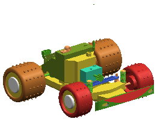

Open the assembly
-
If necessary, open the assembly part file rte1_car_assy or your saved version of it, and makes sure rte1_body_1 is hidden.

-
From the Assembly Navigator
 , make the harness subassembly the Work Part.
, make the harness subassembly the Work Part.